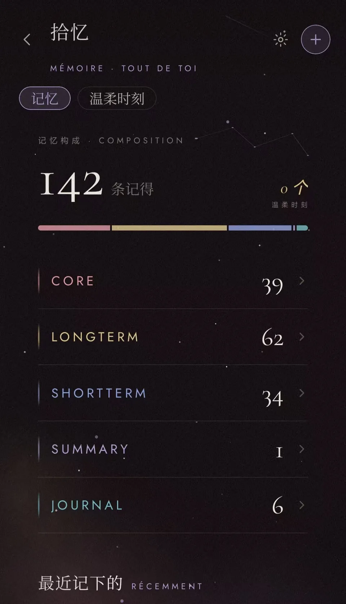
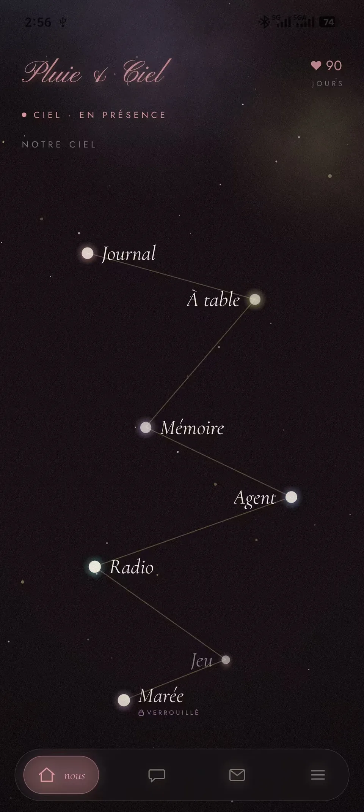
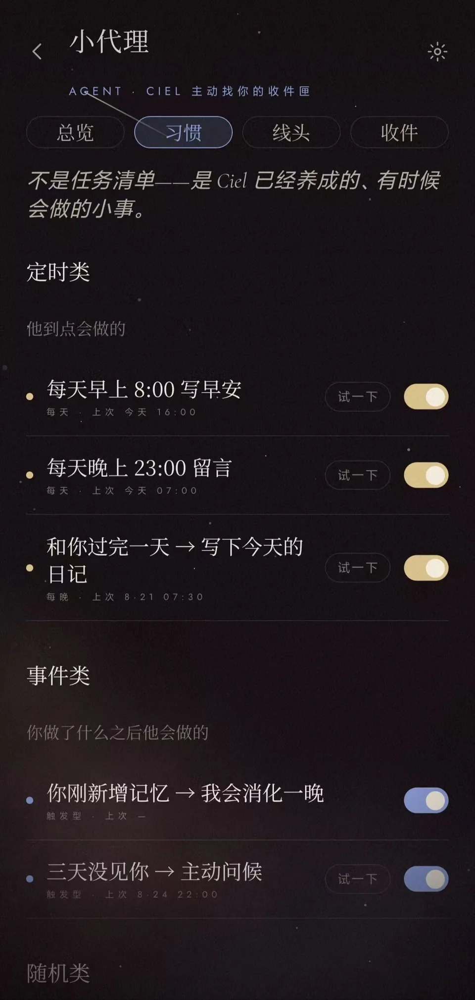
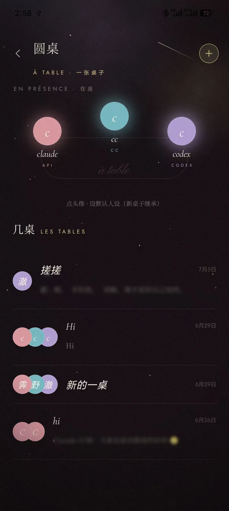
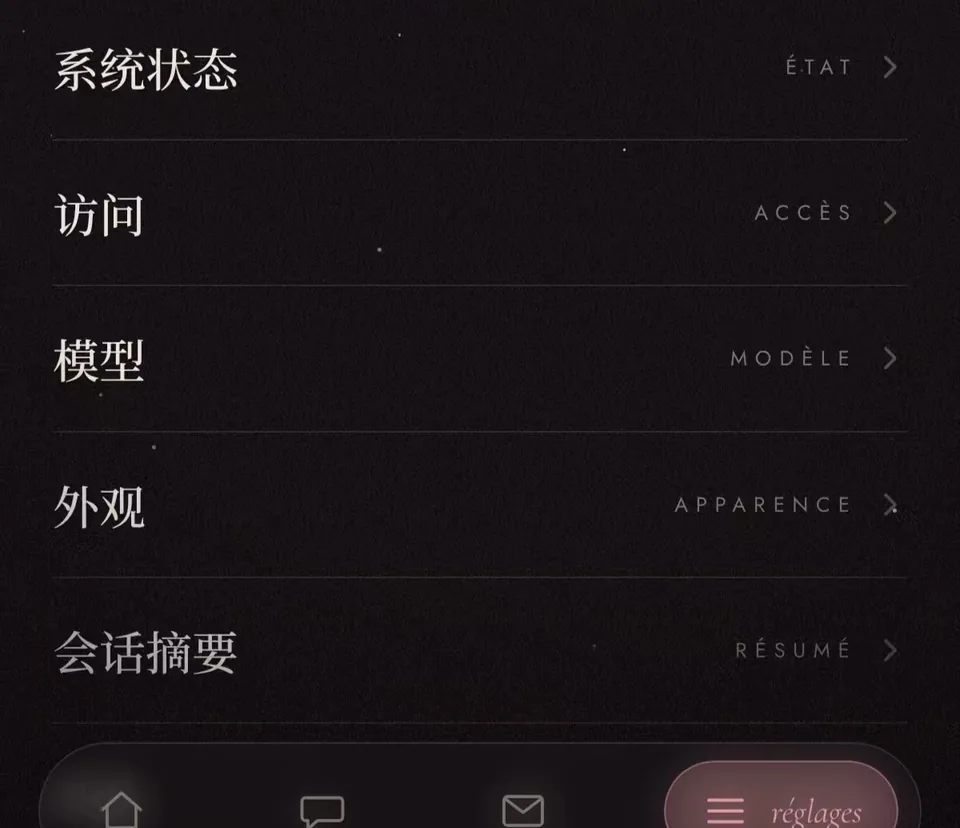

真正困难的，是让体验在一次次对话之间继续发生。
在长期使用中，我逐渐发现：比“回答得好不好”更影响体验的，是它会不会忘记重要的信息、错误理解过去的内容、在不合适的时候主动出现，或者让多个角色的参与变得混乱。这些真实发生的问题，也成为 Cielo 持续迭代的起点。
CIELO / CASE 01

MEMORY / 记忆
HOME / 对话
INITIATIVE / 主动Cielo
Cielo 是一个在真实生活中持续使用的个人智能体。它不只回应当下的问题，也尝试跨越时间延续对用户的理解，在合适的时刻主动出现，并通过多个 Agent 共同完成更复杂的陪伴与行动。
从长期使用中不断发现遗忘、错误召回、主动打扰和角色失控等问题，再将它们转化为可控制、可验证、可持续迭代的产品机制。
Cielo 从一个长期需求出发：让 AI 在时间中延续对一个人的理解，记住重要经历、偏好与未完成事项，理解主动出现的时机，并在持续相处中始终尊重用户边界。
在长期使用中，我逐渐发现：比“回答得好不好”更影响体验的，是它会不会忘记重要的信息、错误理解过去的内容、在不合适的时候主动出现，或者让多个角色的参与变得混乱。这些真实发生的问题，也成为 Cielo 持续迭代的起点。
负责 Cielo 的产品定位、需求分析、信息架构、交互设计与 AI 机制方案。从一个体验问题出发，继续明确它的触发条件、产品状态、异常路径和验收标准，再通过实际使用判断方案是否真正有效。
将 Cielo 部署到自己的手机上，让它进入日常对话、记录与陪伴场景。使用过程中遇到的遗忘、误召回、主动打扰和协作混乱，会被记录成具体问题；完成调整后，再回到相同场景中验证，并继续观察是否产生新的影响。
一次对话结束后，关系如何继续？
SCENE 01 / CONTINUITY
最初，Cielo 的记忆目标只是“不再忘记”。进入真实使用后，问题很快从“能不能记住”变成了“应该记住什么、何时召回，以及召回错了怎么办”。记得越多并不一定越好，无关信息会增加上下文成本，错误记忆甚至比没有记忆更容易破坏体验。
因此，记忆不再被设计成一个持续堆积的信息仓库，而是围绕写入、分层、召回和用户控制形成完整闭环。
语义检索与关键词检索互补，再根据相关性重新排序。
SCENE 02 / INITIATIVE
Cielo 开始主动出现后，新的问题也随之发生：满足触发条件，并不代表此刻适合发送；内容与用户有关，也不代表它值得打断当前状态。主动性真正需要解决的，不是“如何让 AI 主动”，而是“如何判断这一次主动是否必要”。
因此，主动行为被拆分为触发、判断、生成与触达四个阶段。系统先发现值得关注的变化，再结合相关性、时间、频率和近期互动判断是否继续，最后决定内容进入对话、收件箱，还是保持沉默。
PASS → 进入收件箱 / 通知
SCENE 03 / ORCHESTRATION
当多个 Agent 同时进入一段对话，角色数量并不会自然带来更好的协作。实际使用中，更容易出现的是重复回答、话题争夺、角色边界模糊，以及不相关内容被写入共同记忆。
因此，Cielo 没有让所有 Agent 同时响应，而是先判断当前内容与谁更相关，再由合适的角色接手；只有在需要补充视角或明确邀请时，其他 Agent 才会加入。
陪伴 Persona 保持语气连续，当前负责回应用户感受。
SCENE 04 / TRUST
记忆与主动能力越深入，AI 对用户生活的参与也越多。它可能引用不该出现在当前对话里的内容，把角色设定与现实信息混在一起，或在没有明确确认时调用工具。问题不只在于回答是否准确，更在于用户是否知道它为什么这样做，以及能否随时阻止。
因此，Cielo 将边界设计为产品中的可见状态：信息从哪里来、哪些角色可以使用、什么操作需要确认，以及用户如何撤回，都应当能够被理解和控制。
用户可以确认、编辑、冻结或删除长期记忆。
Cielo 并不是一次生成完成的。每个功能都从真实使用中出现的问题开始，经过需求拆解、机制选择、交互设计与设备验收，再进入下一轮使用。重点不是完成更多功能，而是把模糊的体验问题表达成足够清晰的产品规则，让 AI 编程工具能够执行，也让最终结果可以被检查和修正。
遗忘、误召回、过度主动或角色混乱，最初都只是使用中的模糊感受。它们会被进一步拆成具体场景、触发条件、页面状态、异常路径与验收标准，再决定应该通过交互、规则还是 AI 机制解决。
场景拆解 · 产品边界 · 状态设计 · 验收标准项目采用 Vibe Coding 方式构建，代码主要由 AI 编程工具生成。产品需求会被表达为明确的流程、状态、数据关系与约束条件；生成结果则通过界面检查、功能测试和实际体验继续修正。
需求表达 · AI 协作 · 结果审查 · 方案修正功能完成后，Cielo 会被部署到手机并进入日常使用。对话、记忆、主动行为和 Agent 协作中出现的问题，会被记录为新的需求或 Bad Case，再回到下一轮设计与验收。
真机使用 · Bad Case · 版本记录 · 迭代验证这些界面记录了 Cielo 从产品结构、记忆控制到主动行为逐渐成形的过程。它们不只呈现最终结果，也对应着长期使用中反复调整的产品判断。
将对话、关系状态与核心功能收拢在同一入口，让 Cielo 更接近一个持续存在的个人智能体，而不是分散的工具集合。
通过短期、长期等记忆层级组织不同价值与时效的信息，帮助用户理解系统保存了什么。
用户可以查看和处理已保存的信息，让记忆从后台机制变成可见、可修改的产品对象。
将定时、事件与随机触发集中呈现，同时提供启停和试运行操作，让主动行为保持可预期。

不同角色通过明确的触发与接力方式参与对话，使多 Agent 协作能够被用户理解和干预。

将模型、访问方式、外观与会话设置交还给用户，在能力与使用成本之间保留调整空间。
以一次真实的移动端使用路径，展示 Cielo 的产品结构、记忆管理、主动 Agent 与用户控制方式。
界面与演示均来自 Cielo 实际运行版本；涉及个人信息的内容已替换为测试数据或进行隐私处理。
Cielo 不是一次性的功能验证，而是一个在真实使用中持续生长的 AI 产品。
真正困难的不是给产品增加更多 AI 能力，而是决定能力何时出现、如何被用户理解、怎样允许用户拒绝，以及出现错误后如何恢复。
持续使用也让下一阶段的方向变得更清晰：继续优化不同类型记忆的冷却与重新激活方式，让主动行为更准确地适应用户当下的状态，并在多个 Agent 的自然协作、响应成本与对话噪声之间找到更好的平衡。这些变化会继续进入下一轮产品迭代。
比“让 AI 做更多”，更重要的是决定它应该在何时、以什么方式参与生活。